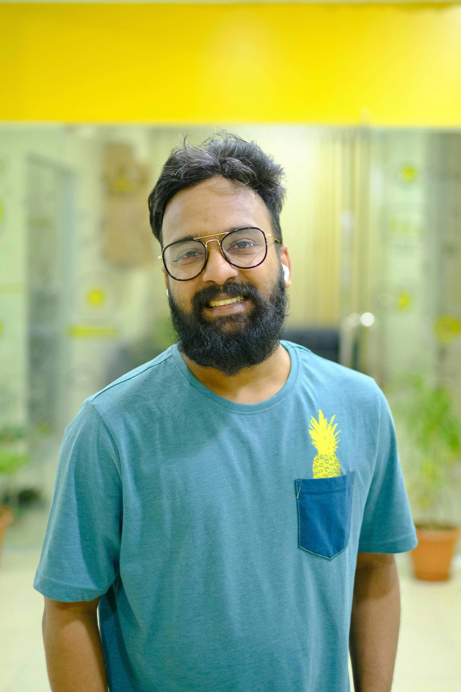

EXPLORAR VOCES
Juan Pérez
Comunicación Política · UNLaM
La comunicación política en tiempos de algoritmosMaría Gómez
Diseño UX · UBA
Diseñar para usuarios o para métricasLucía Torres
Periodismo Digital · UNLaM
La noticia como experiencia visualTomás Bianchi
Branding Cultural · UNDAV
Las marcas también construyen ciudadaníaCamila Ruiz
Cultura Digital · UBA
El algoritmo como nuevo editor cultural
Mateo Silva
Medios · UNLaM
El streaming y la nueva conversación pública
No encontramos voces con esa búsqueda.